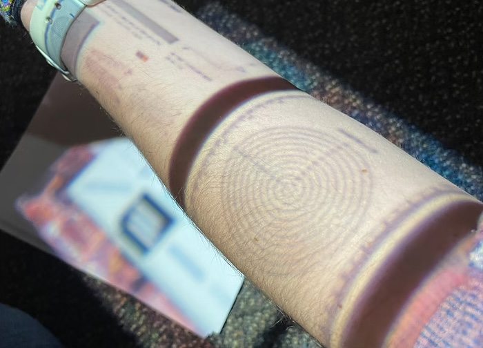

Contactless Wound Measurer
This project developed a fully contactless projected ruler system for wound measurement. By projecting a calibrated scale directly onto the patient’s skin, nurses can assess wound dimensions without physical contact, reducing contamination risk and improving patient comfort. The device also integrates image capture to document wound healing progress over time.
Project Goals
- Improve wound measurement accuracy while eliminating direct contact.
- Enhance nurse and patient safety by minimizing contamination risk.
- Enable efficient wound documentation and monitoring over time.
Design Highlights
- Projected Measurement System: Uses a calibrated projection to display a ruler directly onto the wound area.
- Hygienic and Safe: Eliminates the need for physical measuring tools, reducing the risk of infection.
- Workflow Efficiency: Allows for quick measurements during rounds, reducing procedure time.